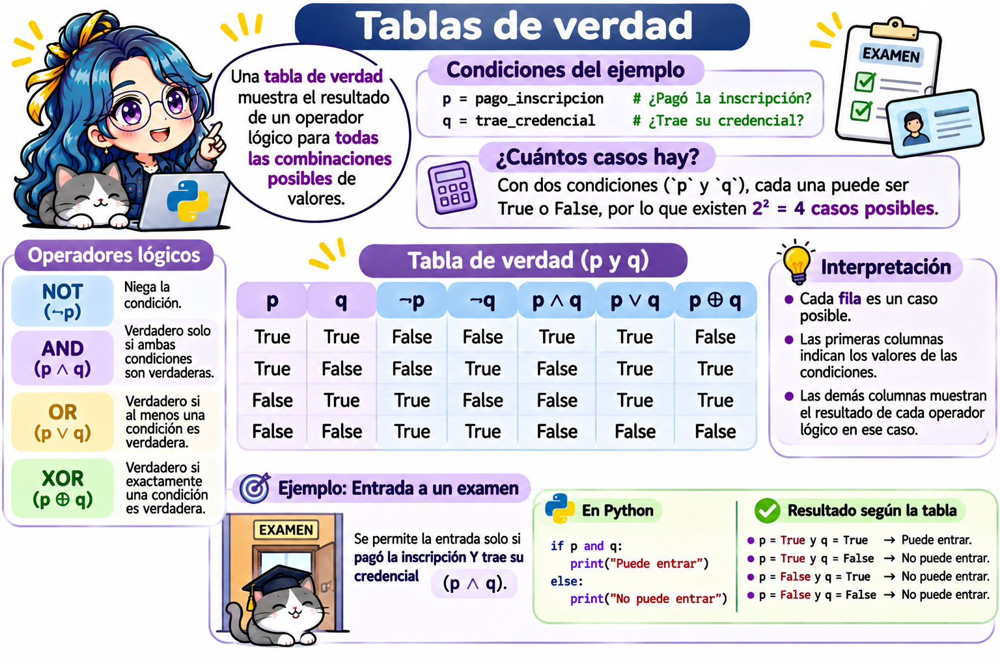

Hasta ahora, nuestros programas ejecutan todas sus instrucciones, una tras otra. Los condicionales permiten que un programa tome decisiones: ejecutar ciertas instrucciones solo si se cumple una condición.
Ya usamos condicionales en Bash (capítulo de Condicionales); la idea es la misma, solo cambia la sintaxis. En este capítulo veremos:
Expresiones booleanas: las preguntas que regresan True o False.
Las instrucciones if, else y elif.
Condicionales anidados y la expresión condicional en una línea.
Cómo usar condicionales para la programación defensiva (continuación del capítulo de buenas prácticas).
55.1 Expresiones booleanas: hacer preguntas
Para tomar decisiones necesitamos hacer preguntas cuya respuesta sea True (verdadero) o False (falso). A estas preguntas se les llama expresiones booleanas.
55.1.1 Operadores de comparación
Operador
Significado
Ejemplo
Resultado
==
Igual a
5 == 5
True
!=
Diferente de
5 != 3
True
>
Mayor que
5 > 8
False
<
Menor que
5 < 8
True
>=
Mayor o igual que
5 >= 5
True
<=
Menor o igual que
4 <= 3
False
Importante
No confundas = con ==. Un solo signo asigna un valor (x = 5); dos signos comparan (x == 5).
55.1.2 Operadores lógicos
Combinan varias preguntas.
Operador
Regresa True si…
Ejemplo
Resultado
and
Ambas condiciones son verdaderas.
5 > 3 and 2 > 4
False
or
Al menos una condición es verdadera.
5 > 3 or 2 > 4
True
not
La condición es falsa (la invierte).
not 5 > 3
False
55.1.3 Otras preguntas útiles
Expresión
Pregunta
Ejemplo
Resultado
x in coleccion
¿x está en la colección?
3 in [1, 2, 3]
True
isinstance(x, tipo)
¿x es de ese tipo?
isinstance(8.5, (int, float))
True
a <= x <= b
¿x está entre a y b?
0 <= 8.5 <= 10
True
len(x) > 0
¿La colección tiene elementos?
len([]) > 0
False
Python permite encadenar comparaciones: 0 <= x <= 10 es lo mismo que 0 <= x and x <= 10, como se escribe en matemáticas.
Código
calificacion =8.5print(isinstance(calificacion, (int, float))) # ¿Es un número?
True
Código
print(0<= calificacion <=10) # ¿Está en el rango?
True
Código
print(calificacion in [6, 7, 8, 9, 10]) # ¿Es un entero entre 6 y 10?
False
55.1.4 Tablas de verdad
Una tabla de verdad muestra el resultado de un operador lógico para todas las combinaciones posibles de valores. Igual que en lógica matemática (\(\land\), \(\lor\), \(\neg\)), usamos letras para representar condiciones:
p y q son dos condiciones cualesquiera, cada una puede ser True o False.
Cada fila es un caso posible. Como hay dos condiciones y cada una tiene dos valores, existen \(2 \times 2 = 4\) casos.
Las demás columnas dicen qué resultado da cada operador en ese caso.

Para entenderlo con un ejemplo concreto, imagina que para entrar a un examen se revisan dos condiciones:
p = pago_inscripcion # ¿Pagó la inscripción?q = trae_credencial # ¿Trae su credencial?
and: se necesitan las dos. “Puede entrar si pagó y trae credencial”.
Caso
p (pagó)
q (credencial)
p and q (¿entra?)
¿Por qué?
1
True
True
True
Cumple las dos condiciones.
2
True
False
False
Le falta la credencial.
3
False
True
False
Le falta pagar.
4
False
False
False
No cumple ninguna.
and solo da True en un caso: cuando ambas condiciones son verdaderas.
or: basta con una. “Obtiene un descuento si es estudiante o si es docente”.
Caso
p (estudiante)
q (docente)
p or q (¿descuento?)
¿Por qué?
1
True
True
True
Cumple las dos (con una bastaba).
2
True
False
True
Es estudiante.
3
False
True
True
Es docente.
4
False
False
False
No cumple ninguna.
or solo da False en un caso: cuando ninguna condición es verdadera.
not: invierte el valor. Solo tiene una condición, así que hay dos casos:
Caso
p (¿llueve?)
not p (¿no llueve?)
1
True
False
2
False
True
Tabla completa. Así se resumen los tres operadores. Lee cada fila de izquierda a derecha: “si p vale … y q vale …, entonces p and q vale …, p or q vale … y not p vale …”.
p
q
p and q
p or q
not p
True
True
True
True
False
True
False
False
True
False
False
True
False
True
True
False
False
False
False
True
Compruébalo con Python: cambia los valores de p y q para reproducir cada fila de la tabla.
55.1.5 Valores “verdaderos” y “falsos”
En una condición, Python también acepta objetos que no son booleanos. Estos valores se consideran falsos; cualquier otro valor se considera verdadero:
Tipo
Valor considerado falso
Booleano
False
Números
0, 0.0
Texto
"" (cadena vacía)
Colecciones
[], (), {}, set() (vacías)
Ausencia de valor
None
Código
print(bool(0), bool(-3))
False True
Código
print(bool(""), bool("hola"))
False True
Código
print(bool([]), bool([0]))
False True
55.2 La instrucción if
if ejecuta un bloque de código solo si la condición es verdadera:
if condicion: instruccion_1 # Se ejecutan solo si la condición es True instruccion_2instruccion_3 # Se ejecuta siempre
Observa tres detalles de la sintaxis:
La línea del if termina con dos puntos (:).
Las instrucciones que dependen del if llevan indentación de 4 espacios. En Python, la indentación no es opcional: indica qué instrucciones pertenecen al bloque.
No hay palabra de cierre (en Bash usábamos fi): el bloque termina cuando termina la indentación.
Código
edad =20if edad >=18:print("Eres mayor de edad")
Eres mayor de edad
Código
print("Fin del programa")
Fin del programa
55.3if y else
else indica qué hacer cuando la condición es falsa:
Ejemplo: saber si un número es par o impar con el operador módulo %, que regresa el residuo de una división:
Código
numero =17if numero %2==0:print(numero, "es par")else:print(numero, "es impar")
17 es impar
55.4if, elif y else
Cuando hay más de dos casos, usamos elif (abreviatura de else if). Python evalúa las condiciones de arriba hacia abajo y ejecuta solo el primer bloque cuya condición sea verdadera.
Por ejemplo, la escala de calificaciones de la UNAM:
Calificación
Nivel
9 a 10
MB (Muy Bien)
8 a 8.9
B (Bien)
6 a 7.9
S (Suficiente)
Menor que 6
NA (No Acreditado)
Modifica la calificación y presiona Run Code:
Importante
El orden importa. Si la primera condición fuera calificacion >= 6, una calificación de 9.5 también la cumpliría y obtendríamos "S". Cuando las condiciones se traslapan, escribe primero la más restrictiva.
55.4.1 Diferencias con Bash
Bash
Python
Inicio
if [ condición ]; then
if condición:
Otra condición
elif [ condición ]; then
elif condición:
En otro caso
else
else:
Cierre
fi
No hay: termina la indentación.
Comparar números
-eq, -ne, -gt, -lt, -ge, -le
==, !=, >, <, >=, <=
Operadores lógicos
&&, ||, !
and, or, not
Mostrar texto
echo "Aprobado"
print("Aprobado")
55.5 Condicionales anidados
Un if puede ir dentro de otro. Cada nivel agrega 4 espacios de indentación:
Código
numero =-4if numero !=0:if numero >0:print("Positivo")else:print("Negativo")else:print("Cero")
Negativo
Muchas veces un condicional anidado se puede escribir de forma más clara con elif:
Código
numero =-4if numero >0:print("Positivo")elif numero <0:print("Negativo")else:print("Cero")
Negativo
55.6 Expresión condicional en una línea
Cuando solo queremos elegir entre dos valores, podemos escribir el condicional en una sola línea:
variable = valor_si_verdadero if condicion else valor_si_falso
Úsala solo en casos sencillos; si la condición es larga, el if normal es más fácil de leer.
55.7 Programación defensiva con condicionales
En el capítulo de buenas prácticas usamos assert para detener el programa cuando un dato era incorrecto. Con condicionales tenemos más opciones:
Opción 1. Avisar y continuar:
Código
calificacion =95if0<= calificacion <=10:print("Calificación registrada:", calificacion)else:print("Aviso: la calificación", calificacion, "no está entre 0 y 10 y no se registró")
Aviso: la calificación 95 no está entre 0 y 10 y no se registró
Opción 2. Detener el programa con un error claro (raise):
La instrucción raiselanza un error del tipo que elijamos, con un mensaje propio. Es la forma recomendada de rechazar datos incorrectos:
Código
calificacion =95ifnotisinstance(calificacion, (int, float)):raiseTypeError("La calificación debe ser un número")elifnot0<= calificacion <=10:raiseValueError("La calificación debe estar entre 0 y 10; se recibió "+str(calificacion))
ValueError: La calificación debe estar entre 0 y 10; se recibió 95
Opción 3. Evitar el error antes de que ocurra:
Código
total =45estudiantes =0if estudiantes >0: promedio = total / estudiantesprint("Promedio:", promedio)else:print("No hay estudiantes: no se puede calcular el promedio")
No hay estudiantes: no se puede calcular el promedio
Herramienta
¿Qué hace?
¿Cuándo usarla?
assert
Detiene el programa con AssertionError.
Verificar supuestos mientras programas.
if + print()
Muestra un aviso y continúa.
Cuando el programa puede seguir sin ese dato.
if + raise
Detiene el programa con el error que elijas.
Rechazar datos incorrectos con un mensaje claro.
if / else
Elige otro camino.
Evitar un error antes de que ocurra (por ejemplo, dividir entre cero).
55.8 Errores comunes
Error
Ejemplo
Corrección
Usar = en lugar de ==
if x = 5: (SyntaxError)
if x == 5:
Olvidar los dos puntos
if x > 5 (SyntaxError)
if x > 5:
Olvidar la indentación
print() alineado con el if (IndentationError)
Indenta 4 espacios.
Comparar con varios valores mal escritos
if color == "rojo" or "azul": (¡siempre es True!)
if color == "rojo" or color == "azul": o if color in ["rojo", "azul"]:
Condiciones en desorden en elif
if c >= 6: ... elif c >= 9: ...
Escribe primero la condición más restrictiva.
Comparar un texto con un número
if "8" > 6: (TypeError)
Convierte primero: if int("8") > 6:
Nota
¿Por qué color == "rojo" or "azul" siempre es verdadero? Python lo interpreta como (color == "rojo") or ("azul"), y una cadena no vacía como "azul" se considera verdadera.
55.9 Ejercicios
Resuelve los ejercicios en los editores interactivos. Recuerda que lo que escribas no se guarda al recargar la página.
55.9.1 Ejercicio 1. Expresiones booleanas
Parte A. Antes de ejecutar, predice si cada línea muestra True o False. Después ejecuta el código para comprobarlo.
Parte B. En la última línea, escribe una expresión booleana que verifique que calificacion es un número (int o float) y que está entre 0 y 10. Con el valor 8.5 debe regresar True; prueba también con 11 y con "8.5" (texto), que deben regresar False.
NotaPista
Une dos preguntas con and: isinstance(calificacion, (int, float)) y 0 <= calificacion <= 10. Python evalúa de izquierda a derecha y, si la primera pregunta es False, ya no evalúa la segunda; por eso con "8.5" no aparece un error.
TipSolución
# Parte Aprint(7>3and10<5) # False: la segunda es falsaprint(7>3or10<5) # True: la primera es verdaderaprint(not4==4) # Falseprint(3in [1, 2, 3]) # Trueprint("a"in"Python") # False: no hay "a" en "Python"print(2<=2<5) # True# Parte Bcalificacion =8.5isinstance(calificacion, (int, float)) and0<= calificacion <=10
55.9.2 Ejercicio 2. Par o impar
Completa el programa para que la variable tipo sea "par" si numero es par, o "impar" en otro caso. Prueba con varios números.
NotaPista
numero % 2 es el residuo de dividir entre 2. No olvides los dos puntos después de else.
TipSolución
numero =17if numero %2==0: tipo ="par"else: tipo ="impar"print(numero, "es", tipo)tipo
55.9.3 Ejercicio 3. Escala de calificaciones con validación
Completa el programa para asignar el nivel según la escala de la UNAM (MB, B, S, NA). Antes de clasificar, verifica que la calificación esté entre 0 y 10; si no lo está, nivel debe ser "Inválida".
Prueba con 8.5, 9.5, 6, 4 y 11.
NotaPista
Como la validación ya descartó los valores fuera de rango, basta con calificacion >= 9, calificacion >= 8 y calificacion >= 6, en ese orden.
TipSolución
calificacion =8.5ifnot0<= calificacion <=10: nivel ="Inválida"elif calificacion >=9: nivel ="MB"elif calificacion >=8: nivel ="B"elif calificacion >=6: nivel ="S"else: nivel ="NA"print("Calificación:", calificacion, "Nivel:", nivel)nivel
55.9.4 Ejercicio 4. Año bisiesto
Un año es bisiesto si es divisible entre 4, excepto los que son divisibles entre 100, a menos que también sean divisibles entre 400. Por ejemplo: 2024 sí es bisiesto, 1900 no lo es y 2000 sí lo es.
Escribe una expresión booleana y guárdala en es_bisiesto.
Usa un if / else para mostrar si el año es bisiesto o no.
Deja es_bisiesto en la última línea.
NotaPista
“Divisible entre 4” se escribe anio % 4 == 0. La regla completa combina tres condiciones con and y or: (divisible entre 4 y no entre 100) o divisible entre 400.
TipSolución
anio =1900es_bisiesto = (anio %4==0and anio %100!=0) or anio %400==0if es_bisiesto:print(anio, "es bisiesto")else:print(anio, "no es bisiesto")es_bisiesto
Observa que if es_bisiesto: es suficiente; no hace falta escribir if es_bisiesto == True:.
55.9.5 Ejercicio 5. Raíces de una ecuación cuadrática
Para la ecuación \(ax^2 + bx + c = 0\), el discriminante\(\Delta = b^2 - 4ac\) indica cuántas raíces reales tiene:
Discriminante
Raíces reales
\(\Delta > 0\)
Dos: \(x = \dfrac{-b \pm \sqrt{\Delta}}{2a}\)
\(\Delta = 0\)
Una: \(x = \dfrac{-b}{2a}\)
\(\Delta < 0\)
Ninguna
Completa el programa para que la lista raices contenga las raíces reales. Como programación defensiva, si a == 0 el programa debe lanzar un ValueError, porque la ecuación no es cuadrática.
Prueba con (1, -3, 2), (1, 2, 1), (1, 0, 1) y (0, 2, 1).
NotaPista
El discriminante es b ** 2 - 4 * a * c. Las condiciones son discriminante > 0 y discriminante == 0. Elevar a 0.5 es lo mismo que sacar raíz cuadrada.
TipSolución
a, b, c =1, -3, 2if a ==0:raiseValueError("a no puede ser 0: la ecuación no es cuadrática")discriminante = b **2-4* a * cif discriminante >0: x1 = (-b + discriminante **0.5) / (2* a) x2 = (-b - discriminante **0.5) / (2* a) raices = [x1, x2]elif discriminante ==0: raices = [-b / (2* a)]else: raices = []print("Discriminante:", discriminante)print("Raíces reales:", raices)raices # [2.0, 1.0]
55.9.6 Ejercicio 6. Detective de condicionales
El programa tiene dos errores de lógica: no marca ningún error, pero los resultados son incorrectos.
"azul" no es un color cálido, pero el programa dice que sí. ¿Por qué?
Una calificación de 9.5 debería ser "MB", pero el programa dice "S". ¿Por qué?
Corrige ambos errores. La última línea debe regresar "MB".
NotaPista
Python lee la condición como (color == "rojo") or ("naranja"), y una cadena no vacía siempre es verdadera.
Con 9.5, la primera condición calificacion >= 6 ya es verdadera, así que Python no revisa las siguientes.
TipSolución
color ="azul"if color in ["rojo", "naranja"]: # o: color == "rojo" or color == "naranja"print(color, "es un color cálido")else:print(color, "es un color frío")calificacion =9.5if calificacion >=9: nivel ="MB"elif calificacion >=8: nivel ="B"elif calificacion >=6: nivel ="S"nivel # 'MB'
55.10 Resumen
Tema
Idea clave
Expresiones booleanas
Preguntas que regresan True o False: ==, !=, <, <=, and, or, not, in, isinstance().
if
Ejecuta un bloque solo si la condición es verdadera. Termina con : y usa 4 espacios de indentación.
else
Qué hacer si la condición es falsa.
elif
Revisa otra condición; solo se ejecuta el primer bloque verdadero.
Anidados
Un if dentro de otro; muchas veces se simplifican con elif.
En una línea
valor_1 if condicion else valor_2.
Programación defensiva
if + print() para avisar, if + raise para rechazar datos, if / else para evitar errores.
Taller de CómputoTaller de Cómputo56Introducción a NumPy54Sintaxis de nombres, buenas prácticas y programación defensiva en PythonInformación generalTemario1Introducción e integración2Sistema de evaluación + DOCSección 1 - Componentes de una computadora3Introducción a los Componentes de una Computadora4🎮 AhaSlides 1 - Manos a la obra5Sistema Operativo (SO) y sus funciones6✏️ Tarea 1 - Mi Sistema Operativo7Buenas prácticas en programación8📚Actividad 1 en equipo - Mi primer algoritmo9🎮 AhaSlides 2 -Manos a la obra10Doc (uDocz) para el apoyo de este curso 🤖Sección 2 - Instalación de programas11📌 To do list - Instalación de programas12Instalación de Git y Bash13Instalación de R, RStudio y Rtools/XCode14Introducción a R y Rstudio15Instalación de Python y reticulate en Rstudio16Integración de Bash en la terminal de RstudioSección 3 - Introducción a Bash17Introducción a Linux/Unix18Mis primeros pasos en Bash19🎮 AhaSlides 3 -Manos a la obra20Caracteres, Strings y Wildcards21🎮 AhaSlides 4 -Manos a la obra22Expresiones regulares (REGEX)23Encontrar patrones con grep24🎮 AhaSlides 5 -Manos a la obraSección 4 - Edición de archivos con Bash25Edición de archivos con los editores de texto (nano y vim)26Crear un R Project27Scripts en Bash28Edición de archivos con el editor de flujo sed29Tipos de enlaces - symlinks, hard links e hipervínculos30📚 Proyecto integrador en equipo - Script Bash31Filtrado de texto (grep, cut, sort, uniq, wc)32printf vs echo33📚Actividad 2 en equipo - ¡REDUCE EL CÓDIGO BASH!34Condicionales35🎮 AhaSlides 6 -Manos a la obra36Bucles (for loops)37🎮 AhaSlides 7 -Manos a la obraSección 5 - Introducción a Git/GitHub38Descargar y cargar Librerías en Rstudio39Introducción a Git / GitHub40Conectar a GitHub con SSH41Configurar Git42Repositorios43Ignorar archivos/carpetas44📚 Actividad 1 y 245Resumen y Práctica FinalSección 6 - Introducción a R y Rstudio46Introducción a Markdown47📚 Actividad 3: Página web con Rmarkdown48Introducción a Quarto49📚 Actividad 4 y 5Sección 7 - Introducción a Python50Introducción a Python en Rstudio usando reticulate51Configuraciones para usar Quarto con Python52🐍 Actividad 1: variables y objetos (tipo, valor e identidad)53🐍 Actividad 2: atributos y métodos de los objetos54Sintaxis de nombres, buenas prácticas y programación defensiva en Python55Condicionales en Python56Introducción a NumPy57Ciclos for y while en Python58Cálculo simbólico con SymPy59Visualización de datos con Matplotlib y PlotlyApéndicesAEntornos para trabajar con Python: RStudio, Google Colab y Jupyter NotebookBConda y Miniconda: gestión de entornos y paquetesCQuizzesDCodigo en RSección 7 - Introducción a Python55Condicionales en Python
Taller de Cómputo, 1er semestre: Dra. Evelia Coss
55Condicionales en Python – Taller de Cómputo55Condicionales en Python – Taller de Cómputo55Condicionales en Python – Taller de CómputoTaller de Cómputo